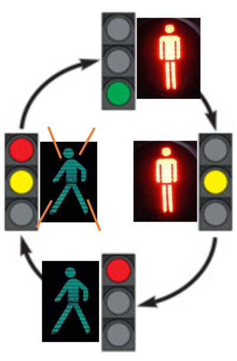

Út a villany felkapcsolásától a jelzőlámpa algoritmus kódolásáig.
"Kódból vagyunk ..."
|  | Jármű | Gyalogos | idő (sec) |
|---|---|---|---|
| piros | zöld | tPiros = 10 | |
| piros-sárga | villogó zöld | tPirosSarga = 3 | |
| zöld | piros | tZold = 10 | |
| sárga | piros | tSarga = 3 |
| Micsoda | Szín | Pin szám |
|---|---|---|
| Jármű | piros | 40 |
| sárga | 38 | |
| zöld | 36 | |
| Gyalogos | piros | 37 |
| zöld | 33 |
//Program könyvtárak Importálás
GPIO és time
//GPIO beállítások
//Ne legyenek üzenetek
//Pin kiosztás tüskeszám alapján
//GPIO alaphelyzetbe
//Pin változók Pin számhoz rendelése
//A Pin kiosztás táblázat alapján
pJarmuPiros = 40
...
//Pinek tömbjének létrehozása
pinek = [pJarmuPiros , ... ]
//Pinek kimenetnek definiálása ciklussal (for)
ciklus 1 ... n
pinek[i] := GPIO.OUT
end ciklus
//Függvények
//Bemenetek: piros, sárga zöld: 1 vagy 0
//1: lámpa ég, 0: lámpa nem ég
//A paramétereknek megfelelően gyulladnak ki a lámpái
function JarmuLampa(piros, sárga, zöld)
pJarmuPiros := piros
...
end function
//Bemenetek: piros, zöld: 1 vagy 0
//1: lámpa ég, 0: lámpa nem ég
//A paramétereknek megfelelően gyulladnak ki a lámpái
function GyalogosLampa(piros, zöld)
pGyalogosPiros := piros
...
end function
//Lámpa teszt függvény:
//n-szer felgyullad és elalszik mindegyik lámpa
//0,5 másodpercenként
function Test(n)
print("Teszt...")
egNemEg := 1
for i ... n
JarmuLampa(egNemEg, egNemEg, egNemEg)
JarmuLampa(egNemEg, egNemEg)
egNemEg := not egNemEg
vár 0,5s
end for
várakozás(0,5s)
egNemEg := 0
JarmuLampa(egNemEg, egNemEg, egNemEg)
JarmuLampa(egNemEg, egNemEg)
print("Teszt vége")
end function
//A program paraméterei
T := 1.0 //Órajel periódusideje (1s)
k := 5 //Gyorsítási faktor
TvalosIdo := T k-ad része //Valós várakozás: tényleges órajel ütem
//Gyalogos zöld villogási rekvenciája:
f := TvalosIdo reciproka, szorozva 2-vel
t := 0 //Időt mutató változó: ez az idő
//Lámpa idők: meddig égnek az egyes lámpák
//Lásd fent Táblázat1 utolsó oszlopa
tPiros := 10
...
tSarga := 3
//összidő:
tOsszido := tPiros + ... + tSarga
//A program indulási pontja
try:
//Teszt indítása (A lámpák villanjanak 5-ször)
Teszt(...)
//A program nevének, állapotának és a kilépés módjának kiírása:
//Legyen kiírva a gyorsítás értéke a paraméter felhasználásával
print(...)
do while True //végtelen ciklus
if t == tOsszido
//Ha elértük az összidőt, az idő induljon újra
t := 0
end if
//Kezdés:
if t == 0
//Jármű lámpa: piros
JarmuLampa(...)
//Gyalogos lámpa: zöld
GyalogosLampa(...)
end if
//Vége a pirosnak (jármű)
if t == tPiros
//Jármű lámpa: piros-sárga
JarmuLampa(...)
//Gyalogos zöld f-el villog
p := GPIO.PWM(...)
p.start(50)
end if
//Vége a piros-sárgának (jármű)
if t == tPiros + tSargaPiros
//Jármű lámpa: zöld
JarmuLampa(...)
//Gyalogos zöld villogás stop:
p.stop()
//Gyalogos lámpa piros
GyalogosLampa(...)
end if
//Vége a zöldnek (jármű)
if t == tPiros + tSargaPiros + tZold
//Jármű lámpa: sárga
JarmuLampa(...)
//Gyalogos lámpa piros
GyalogosLampa(...)
end if
t := eggyel megnöveljük
//Valós órajel ideig várakozunk
várakozás(TvalosIdo)
end do
except KeyboardInterrupt:
print("Pinek lekapcsolva")
GPIO alaphelyzet
Raspberry fényjátékok